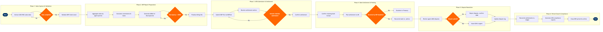

| Step | L4 Step Name | KPI / Target | Pain Point / Risk | Gate |
|---|---|---|---|---|
| 1.1 | Extract GDS/NDC ticket sales data | Sales extract completeness ≥99.9% of all ticketed transactions captured within 2hr of BSP cut-off | NDC direct-connect bookings are not automatically included in legacy BSP extract jobs — manual intervention required to merge NDC settlement files, creating reconciliation gaps and delayed reporting | |
| 1.2 | Validate ticket stock vs. IATA BSP allocation | Ticket validation error rate <0.1% of transactions per BSP billing period | Ticket number ranges allocated across multiple GDS channels can overlap when PSS configuration changes; BSPlink does not auto-detect cross-channel duplicates, requiring manual range-conflict queries | |
| 1.3 | Decision: Completeness check — missing records? | Data completeness gate passed first attempt ≥95% of BSP periods | GDS settlement files arrive up to 6 hours after cut-off due to Travelport file delivery SLA gaps, causing repeated re-ingestion cycles and risk of missing the BSP submission window | ⚠ |
| 2.1 | Aggregate sales by agent and BSP billing period | Aggregation processing completed ≤4hr after data validation; <50 manual corrections per billing period | Sub-agents consolidated under a parent IATA code are not disaggregated in Amadeus Revenue Accounting, requiring custom SQL extracts to identify high-risk individual agents for ADM targeting | |
| 2.2 | Calculate commissions, taxes, and surcharges | Tax calculation accuracy ≥99.95%; surcharge variance vs. ATPCO published rules <0.05% | YQ/YR fuel surcharges filed in ATPCO are updated bi-weekly; Revenue Accounting must manually trigger ATPCO feed refresh — stale surcharge tables cause systematic billing errors affecting hundreds of transactions per period | |
| 2.3 | Generate Agency Debit Memos (ADMs) for discrepancies | ADM issuance rate within 30 days of ticket issue date; ADM dispute rate <15% of issued ADMs | IATA Resolution 850 ADM deadlines (within 9 months of ticket issue) are frequently missed due to backlog in Amadeus Revenue Accounting audit queues — expired ADMs result in unrecoverable revenue leakage | |
| 2.4 | Decision: Discrepancy amount exceeds $500 threshold? | Threshold review completed within 1 business day; 100% of ADMs >$500 reviewed by manager before submission | No automated threshold alerting in BSPlink — manager must manually filter ADM queue; sub-$500 items often accumulate to material amounts across an agent portfolio and are not escalated | ⚠ |
| 3.1 | Submit BSP billing file to IATA via BSPlink | Submission on-time rate ≥99% of billing periods; file rejection rate <0.5% | BSPlink file format requirements (IATA Type A/Type B formats) change with each IATA resolution cycle; failure to update Revenue Accounting export templates before cut-off causes submission rejections with no same-day correction window | |
| 3.2 | Receive and validate BSP settlement advice | Settlement advice received within 3 business days of submission; variance analysis completed same day as receipt | IATA settlement advice arrives as a non-machine-readable PDF in some BSP country plans; manual re-keying into Amadeus Revenue Accounting introduces transcription errors and delays the bank reconciliation cycle | |
| 3.3 | Decision: Settlement amount matches billing submission? | Settlement match rate ≥98% first-pass; queries resolved within 5 business days | IATA BSP applies country-specific rounding rules for multi-currency settlements that differ from airline accounting system rounding — persistent $0.01–$0.05 per-ticket variances aggregate to thousands of dollars per period and are difficult to auto-clear | ⚠ |
| 4.1 | Confirm clearing bank receipt from IATA BSP | Bank confirmation posted within 1 business day of settlement value date; 100% of expected receipts matched | IATA uses country-specific clearing banks (e.g., Citi for US BSP, Barclays for UK BSP); different value date conventions and SWIFT message formats require manual mapping to SAP bank accounts, slowing auto-matching | |
| 4.2 | Post BSP settlement to airline AR accounts | AR posting completed within 2 business days of settlement; open AR items from BSP <3% of total AR at month-end | Agent IATA codes in BSPlink are not always 1:1 mapped to SAP customer master records — new agents or consolidated GSA accounts require manual SAP FI configuration before postings can clear, causing AR aging issues | |
| 4.3 | Decision: Settlement received within BSP calendar deadline? | Zero late settlements from airline side; agent default escalations initiated within 24hr of missed deadline | BSP settlement calendars differ by country and are updated annually by IATA — treasury teams using stale calendar files have missed escalation windows, resulting in unsecured exposure to financially distressed agents | ⚠ |
| 5.1 | Review agent disputes on issued ADMs | Dispute acknowledgement within 5 business days per IATA Resolution 850; dispute queue cleared within 30 days | Agents submit bulk disputes at the 9-month IATA deadline, creating a volume spike that overwhelms the Revenue Accounting team — no automated triage in BSPlink means all disputes require manual review regardless of amount | |
| 5.2 | Investigate disputed ADM with fare/booking evidence | Investigation completed within 15 business days; <5% of ADMs reversed due to airline data errors | Historical booking records in Amadeus Altéa PSS are purged after 13 months, making it impossible to reconstruct fare basis for ADMs near the 9-month dispute deadline — leading to unwinnable disputes and revenue write-offs | |
| 5.3 | Decision: ADM dispute upheld by airline? | Decision communicated within 30 days of dispute receipt; ACMs issued within 5 business days of reversal decision | IATA dispute arbitration (if agent escalates to IATA) typically rules against the airline when documentation is incomplete — inadequate ADM issuance evidence (missing ATPCO fare snapshots at ticketing date) is the leading cause of lost arbitrations | ⚠ |
| 6.1 | Reconcile BSP settlements with revenue GL accounts | Month-end BSP reconciliation completed by day 5 close; unreconciled items <0.1% of gross BSP settlement value | Timing differences between Amadeus Revenue Accounting (accrual at ticket lift) and SAP FI (cash at BSP settlement) create persistent reconciling items that are difficult to clear during month-end close under tight finance calendar deadlines | |
| 6.2 | Generate IATA compliance and audit reports | Compliance pack delivered within 10 business days of period close; zero IATA audit findings classed as material | IATA Resolution 854 compliance reporting requires data from both BSPlink and Amadeus Revenue Accounting in a specific format — no native export combining both sources forces manual assembly in Excel, introducing version control and audit-trail risks | |
| 6.3 | Close BSP period and archive transaction records | Period closed within 15 business days of settlement date; 100% of records archived with retention metadata | BSPlink does not provide a programmatic archive export API — records must be manually downloaded and uploaded to AWS S3, creating a labour-intensive process that is frequently deprioritised, resulting in gaps in the audit archive |